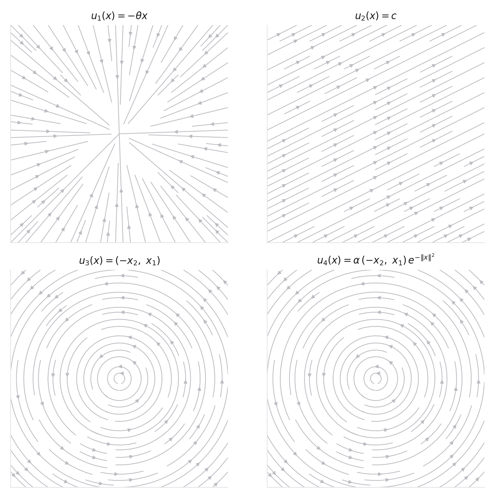

- The analytic flow maps from Problem 2 (they are the ground truth for part 4)
- Euler, Heun, and RK4 stepping, and what order of accuracy means
- The log-density identity from Problem 3, part 5
- Vectorized NumPy and basic Matplotlib
- Problems 2 and 3: this lab implements exactly what you derived there, so mismatches usually mean the derivation and the code disagree
- MIT notes, Section 2.1 for the simulation viewpoint on flow models
- Runge-Kutta methods for the Heun and RK4 update rules and their error orders
- matplotlib streamplot for the divergence heatmap overlay
This lab builds the small code scaffold that later weeks can reuse. The point is not to build a library. The point is to make every object in the Week 1 theory visible, from particles and trajectories to flow maps, divergence, density, and solver error.
Start with four velocity fields in \(\mathbb R^2\):

A live target for this lab. 1,600 particles from \(\mathcal N(0,I_2)\), advected by each field with a Heun integrator. Switch fields mid-flight and watch the same cloud compress, drift, rotate, stir, and (for the double well) split into two metastable populations. Your sandbox should be able to reproduce every one of these behaviors, plus the densities and error curves the demo does not show.
Implement a small set of functions with clean interfaces.
sample_base(n, d, kind="gaussian") velocity_field(x, t, kind, params) integrate_ode(x0, ts, velocity_fn, method="euler") track_log_density(x0, logp0, ts, velocity_fn, divergence_fn) plot_particles(samples, title) plot_warped_grid(grid, title)
- Draw \(10^4\) samples from \(\mathcal N(0,I_2)\). Simulate all four fields from \(t=0\) to \(t=1\). Plot particles at \(t=0,0.25,0.5,1\), arranged as a filmstrip with one row per field. Optional but encouraged, render the evolution as an animation. Watching the swirl field stir the Gaussian while the contraction collapses it builds more intuition than any derivation.
- Create a square grid in \([-3,3]^2\), push it through the same flows, and plot the warped grids. Use the grid plot to explain compression, expansion, and local rotation.
- Plot \(\nabla\cdot u(x)\) as a heatmap over \([-3,3]^2\) for each field, with streamlines overlaid. Using the heatmap alone, predict where particle density will rise and where it will fall, then check the prediction against your filmstrip from part 1. The continuity equation is precisely the statement that these two pictures agree.
- Implement Euler, Heun, and RK4. For contraction and rotation, compare final numerical error against the analytic solution for step counts \(N\in\{4,8,16,32,64,128\}\) on a log-log plot, and fit the slope for each method. You should be able to read the order of each integrator (1, 2, and 4) directly off the plot. Explain any regime where the measured slope deviates.
- For the contraction field, integrate \[ \frac{d}{dt}\log p_t(X_t)=-\nabla\cdot u(X_t) \] and compare the result to the analytic transformed Gaussian density.
- Chemistry-flavored extension (optional). Take the double-well potential \(V(x) = (x_1^2-1)^2 + x_2^2\) and integrate the relaxation field \(u_5(x) = -\nabla V(x)\). Watch the standard normal split into two metastable populations and report the fraction of mass that lands in each well. This is the simplest picture of what a molecular energy landscape does to transported probability, and it previews why multimodality haunts every later week.
- Write a brief interpretation of where the numerical solver succeeds and fails. Mention trajectories, flow map, divergence, density, and base distribution.